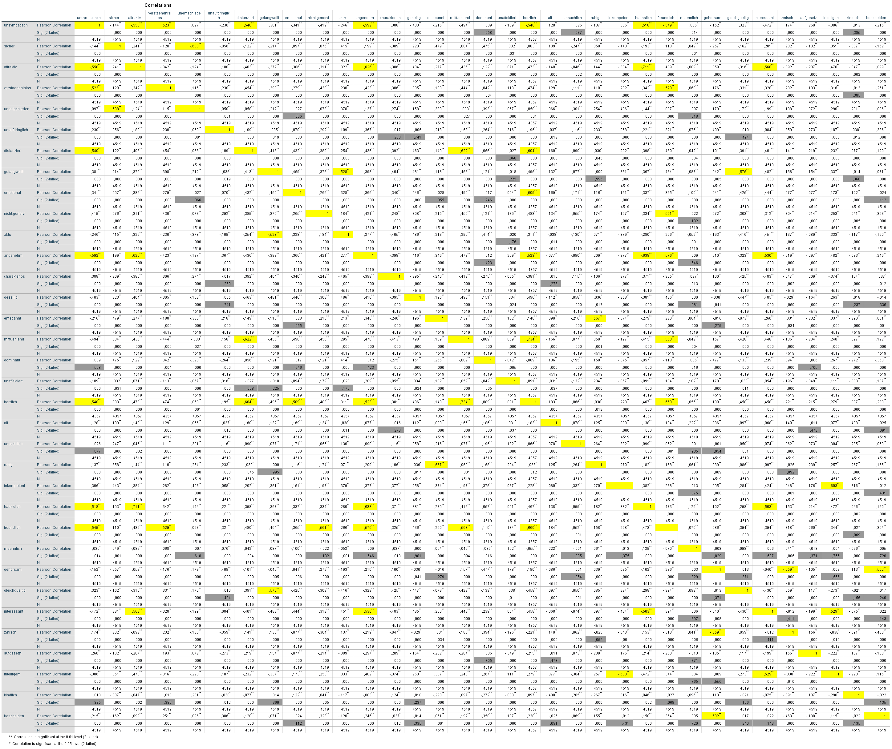

Calculate the suitable correlation coefficients for all speeker characteristics (unsympatisch to bescheiden) with each other and report which collerations are significant.
Dataset: likeability_dimension_ratings.csv
Correlations higher than 0,5 are marked yellow. Significances higher than 0,05 are marked grey and should not be considered
